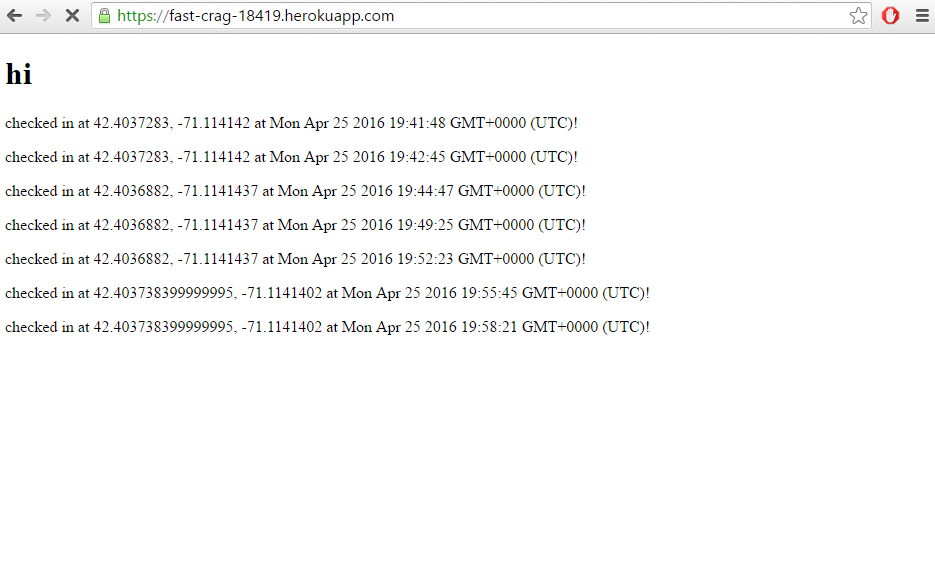
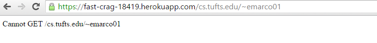
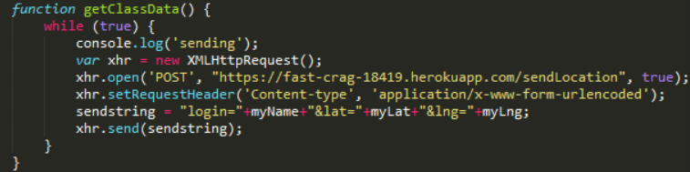
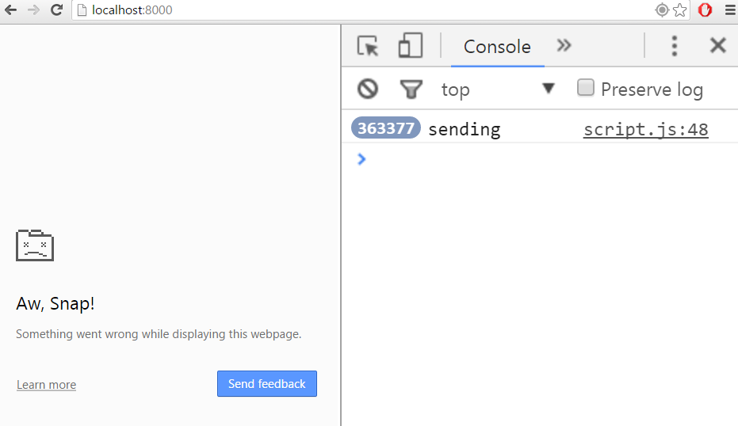
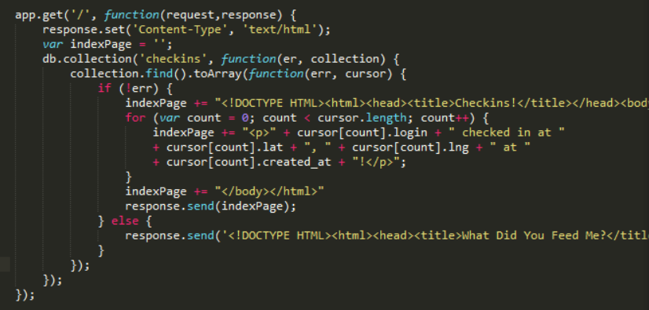

Security Assessment for https://fast-crag-18419.herokuapp.com/
By Elias Marcopoulos
4/25/2016
Intoduction
The purpose of this app is mainly to track its users. Users "checkin" from wherever they are, giving their lat and lng coordinates to the post API /sendLocation, which puts the user in the database and then returns to them a list of all other users and landmarks that are within one mile. I have been hired to see what security flaws exist in the system, and how one may go about fixing them.
Methodology
I first decided to see what flaws I could take advantage of without looking at the source code, in a sort of "black box" manner. This required a lot of guessing at what could potentially be a problem. Afterwards, I looked through the source code for the server, so that I could take note of more specific problems with the code.
Abstract of Findings
The site is blatantly open to cross site scripting, as anyone can "checkin" with their name being a script tag to execute whatever code they want to, including removing the contnet of the page and redirecting to another site. Also, I was able to access the entire database's contents, meaning I could access all of the personal information for everyone in the database. I also was able to spam the server, slowing it down and possibly reducing functionality. There is also a huge personal information violation that exists because of the way arbitrary users can access information about other users.
Issues Found:
- Cross Site Scripting Vulnerability
- Location: '/sendLocation' and '/' paths
- Severity: High
- The injection of scripts into the database through the /sendLocation post path causes any user who uses the / get path to be exposed to the running scripts. This is very, very bad since someone can post a script that does anything, from simply removing all content from the page (which renders the app completely useless) to actually redirecting the user to another webpage entirely (which could contain illegal content or could try and steal the user's personal information through fraud). Thus, this cross site scripting at best makes the app useless, and at worst puts any user at serious personal risk.
- Description:
- I found this by checking in with a login name that was simply a script tag. I started with a simple console.log() statement, and then continued to try removing the content of the page:
- 
- Before the attack, the page was populated with legitimate checkins with names and with a title called 'checkins'. However, I then removed all legitimate checkins by changing the body to only contain the posts I had made with script tags (which is why none of the displayed checkins have names). I also changed the title to 'hi', so that the page completely lost sense of what it's purpose was.
- I then sent a script that would redirect the page to another page on the app that did not exist:
- 
- Now the page could not even be accessed correctly, but instead redirects to my tufts page on the app's machine (which does not exist, as one can see).
- Resolution:
- It is important to sanitize all text received from users. User input can contain harmful intentions, and the best way to eliminate the threat is to simply sanitize the user input when it is received. The following code removes all special characters from user inputed text, which prevents user tags from being implemented:
- safeInput = userInput.replace(/[&\/\\#,+()$~%.'":*?<>{}]/g, '');
- Access all Documents in Checkins Database
- Location: '/checkins.json' path
- Severity: Medium
- Being able to access all the documents in a database is normally a huge privacy concern, as anyone can simply get all of the information of every user and use that information as they please, but this problem is not an issue for this app, since the purpose of the app is to give users access to the records of everyone through the '/' path. Since all information is displayed there, having the information in JSON format in the '/checkins.json' path is simply an easier format to manipulate the data. Privacy is another concern I will talk about, but if this app is not concerned with privacy, then this database vulnerability is not a big issue.
- Description:
- I discovered that this database vulnerability existed by simply trying to use the following url on the '/checkins.json' get path:
- https://fast-crag-18419.herokuapp.com/checkins.json?login[$ne]=GIMME_THE_DATA
- By using [$ne], I searched for all the records whose login is 'n'ot 'e'qual to 'GIMME_THE_DATA', which I assume is everyone, but to check one simply has to use another name in the query, which will return records for login 'GIMME_THE_DATA' as well. In response, I got the following data back:
- I have access to everyone's records!
- Resolution:
- Since this problem has to do with user input, once again the solution is to sanitize the input string! An easy way to do this is with the following code:
- safeInput = userInput.replace(/[&\/\\#,+()$~%.'":*?<>{}]/g, '');
- Spamming the Server
- Location: '/sendLocation path'
- Severity: Low
- Being able to spam the server can really slow down the server. If the server has thousands of post requests to serve, legitimate users could be waiting quite a while before they get their content. The only other threat spamming creates for the server is that the '/' get path, which normally contains a list of all checkins, would be populated continuousy with the spam, making it a page filled with junk.
- Description:
- To spam the server I used the following code:
- 
- Through this code I was able to produce an effect of several hundred thousand post requests before the page stopped working:
- 
- However, when I used the /checkins.json path to get all the records of the spam, I am pretty sure that there were not as many entries as there were posts I had made. Obviously the server could not handle all of the requests, which compromises the functionality of the server.
- Resolution:
- An easy way to stop this from occurring is to monitor the post API with rate limiting middleware. There is a node-module called express-rate-limit. Using this, one can limit the amount of requests a certain IP can make to the server, preventing spam. Here is some code taken from https://www.npmjs.com/package/express-rate-limit:
- var RateLimit = require('express-rate-limit');
- app.enable('trust proxy'); //important when using Heroku (reverse proxy)
- var limiter = new RateLimit({
- windowMs: 15*60*1000, // 15 minutes
- max: 100, // limit each IP to 100 requests per windowMs
- delayMs: 0 // disable delaying
- });
- app.use(limiter);
- Using this code, spam is easily prevented
- Unrestricted Use
- Location: '/' get path
- Severity: High
- This app is using highly sensitive information, namely the exact lat and lng of its users. This information can be used by people such as sexual offenders and murderers to track down the exact location of the individuals who use the app. The lack of authentication required to view all the checkins makes it stupidly easy to simply find out where a user is, and go to them. This is a huge liability
- Description:
- I found this problem by looking through the source code for the '/' get path:
- 
- As one can see, there is no authentication checking anywhere, which allows anyone in the universe with the correct url to simply find the locations of all the app users.
- Resolution:
- I reccommend adding a querystring parameter for login that is required in order to see anything on the page. Then, I would make a list of all users, and verify every login against the list. This is more involved than just making sure that the name has checked in before, as I am suggesting making a list of people who are verified users, so that an attacker cannot simply make a post to /sendLocation and then get everyone's information. This information is extremely sensitive, and serious precautions need to be taken.
Conclusion
There are also other issues not listed here, but these are the most blatant ones that, when fixed, will make your app much, much more secure and safe to use. It is a good thing you hired me to check your security, because right now this app is something I would suggest no one to use. I suggest that you shut down the server immediately, and then after fixing all of these security issues you can reopen the server. This would probably take only a week or two to complete, which would cut your profit's for that time span. On top of that, you would need to hire a software engineer to work, and that could cost up to $800. However, afterwards more people will trust your app, and thus profits will rise higher than ever as new consumers appear, so I would suggest taking steps to be more secure immediately.